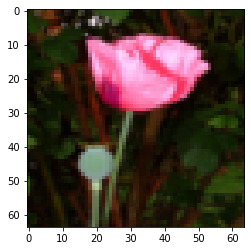
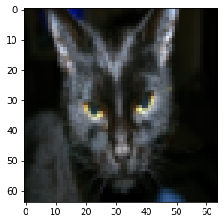
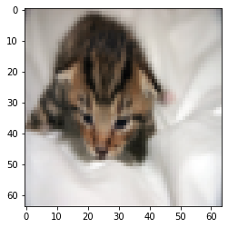
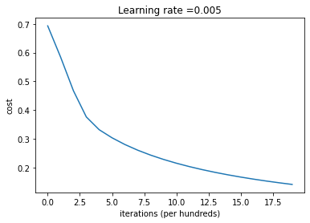
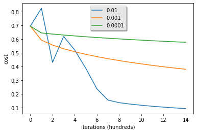

import numpy as np
import copy
import matplotlib.pyplot as plt
import h5py
import scipy
from PIL import Image
from scipy import ndimageTL;DR
In this post, we will build a logistic regression classifier to recognize cats. This is the summary of lecture “Neural Networks and Deep Learning” from DeepLearning.AI. (slightly modified from original assignment)
Packages
First, let’s run the cell below to import all the packages that you will need during this assignment. - numpy is the fundamental package for scientific computing with Python. - h5py is a common package to interact with a dataset that is stored on an H5 file. - matplotlib is a famous library to plot graphs in Python. - PIL and scipy are used here to test your model with your own picture at the end.
Dataset
You are given a dataset (“data.h5”) containing: - a training set of m_train images labeled as cat (y=1) or non-cat (y=0) - a test set of m_test images labeled as cat or non-cat - each image is of shape (num_px, num_px, 3) where 3 is for the 3 channels (RGB). Thus, each image is square (height = num_px) and (width = num_px).
You will build a simple image-recognition algorithm that can correctly classify pictures as cat or non-cat.
def load_dataset():
train_ds = h5py.File('./dataset/train_catvnoncat.h5', 'r')
train_set_x = np.array(train_ds['train_set_x'][:])
train_set_y = np.array(train_ds['train_set_y'][:])
test_ds = h5py.File('./dataset/test_catvnoncat.h5', 'r')
test_set_x = np.array(test_ds['test_set_x'][:])
test_set_y = np.array(test_ds['test_set_y'][:])
classes = np.array(test_ds['list_classes'][:])
train_set_y = train_set_y.reshape((1, train_set_y.shape[0]))
test_set_y = test_set_y.reshape((1, test_set_y.shape[0]))
return train_set_x, train_set_y, test_set_x, test_set_y, classestrain_set_x_orig, train_set_y, test_set_x_orig, test_set_y, classes = load_dataset()We added “_orig” at the end of image datasets (train and test) because we are going to preprocess them. After preprocessing, we will end up with train_set_x and test_set_x (the labels train_set_y and test_set_y don’t need any preprocessing).
Each line of your train_set_x_orig and test_set_x_orig is an array representing an image. You can visualize an example by running the following code. Feel free also to change the index value and re-run to see other images.
index = 30
plt.imshow(train_set_x_orig[index])
print ("y = " + str(train_set_y[:, index]) + ", it's a '" + classes[np.squeeze(train_set_y[:, index])].decode("utf-8") + "' picture.")y = [0], it's a 'non-cat' picture.
index = 25
plt.imshow(train_set_x_orig[index])
print ("y = " + str(train_set_y[:, index]) + ", it's a '" + classes[np.squeeze(train_set_y[:, index])].decode("utf-8") + "' picture.")y = [1], it's a 'cat' picture.
Information from dataset
We want to find out how many data do we have, and what shape each image have. Remember that train_set_x_orig is a numpy-array of shape (m_train, num_px, num_px, 3).
m_train = train_set_x_orig.shape[0]
m_test = test_set_x_orig.shape[0]
num_px = train_set_x_orig.shape[1]
print ("Number of training examples: m_train = " + str(m_train))
print ("Number of testing examples: m_test = " + str(m_test))
print ("Height/Width of each image: num_px = " + str(num_px))
print ("Each image is of size: (" + str(num_px) + ", " + str(num_px) + ", 3)")
print ("train_set_x shape: " + str(train_set_x_orig.shape))
print ("train_set_y shape: " + str(train_set_y.shape))
print ("test_set_x shape: " + str(test_set_x_orig.shape))
print ("test_set_y shape: " + str(test_set_y.shape))Number of training examples: m_train = 209
Number of testing examples: m_test = 50
Height/Width of each image: num_px = 64
Each image is of size: (64, 64, 3)
train_set_x shape: (209, 64, 64, 3)
train_set_y shape: (1, 209)
test_set_x shape: (50, 64, 64, 3)
test_set_y shape: (1, 50)For convenience, you should now reshape images of shape (num_px, num_px, 3) in a numpy-array of shape (num_px \(*\) num_px \(*\) 3, 1). After this, our training (and test) dataset is a numpy-array where each column represents a flattened image. There should be m_train (respectively m_test) columns.
Reshape dataset
Reshape the training and test data sets so that images of size (num_px, num_px, 3) are flattened into single vectors of shape (num_px \(*\) num_px \(*\) 3, 1).
A trick when you want to flatten a matrix X of shape (a,b,c,d) to a matrix X_flatten of shape (b\(*\)c\(*\)d, a) is to use:
X_flatten = X.reshape(X.shape[0], -1).T # X.T is the transpose of Xtrain_set_x_flatten = train_set_x_orig.reshape(train_set_x_orig.shape[0], -1).T
test_set_x_flatten = test_set_x_orig.reshape(test_set_x_orig.shape[0], -1).T
print ("train_set_x_flatten shape: " + str(train_set_x_flatten.shape))
print ("train_set_y shape: " + str(train_set_y.shape))
print ("test_set_x_flatten shape: " + str(test_set_x_flatten.shape))
print ("test_set_y shape: " + str(test_set_y.shape))train_set_x_flatten shape: (12288, 209)
train_set_y shape: (1, 209)
test_set_x_flatten shape: (12288, 50)
test_set_y shape: (1, 50)To represent color images, the red, green and blue channels (RGB) must be specified for each pixel, and so the pixel value is actually a vector of three numbers ranging from 0 to 255.
One common preprocessing step in machine learning is to center and standardize your dataset, meaning that you substract the mean(\(\mu\)) of the whole numpy array from each example, and then divide each example by the standard deviation(\(\sigma\)) of the whole numpy array. But for picture datasets, it is simpler and more convenient and works almost as well to just divide every row of the dataset by 255 (which is the maximum value of a pixel channel).
Let’s standardize our dataset.
train_set_x = train_set_x_flatten / 255.
test_set_x = test_set_x_flatten / 255.What you need to remember:
Common steps for pre-processing a new dataset are: - Figure out the dimensions and shapes of the problem (m_train, m_test, num_px, …) - Reshape the datasets such that each example is now a vector of size (num_px * num_px * 3, 1) - “Standardize” the data
General Architecture of the learning algorithm
It’s time to design a simple algorithm to distinguish cat images from non-cat images.
You will build a Logistic Regression, using a Neural Network mindset. The following Figure explains why Logistic Regression is actually a very simple Neural Network!

Mathematical expression of the algorithm:
For one example \(x^{(i)}\): \[z^{(i)} = w^T x^{(i)} + b \tag{1}\] \[\hat{y}^{(i)} = a^{(i)} = sigmoid(z^{(i)})\tag{2}\] \[ \mathcal{L}(a^{(i)}, y^{(i)}) = - y^{(i)} \log(a^{(i)}) - (1-y^{(i)} ) \log(1-a^{(i)})\tag{3}\]
The cost is then computed by summing over all training examples: \[ J = \frac{1}{m} \sum_{i=1}^m \mathcal{L}(a^{(i)}, y^{(i)})\tag{6}\]
Building the parts of our algorithm
The main steps for building a Neural Network are: 1. Define the model structure (such as number of input features) 2. Initialize the model’s parameters 3. Loop: - Calculate current loss (forward propagation) - Calculate current gradient (backward propagation) - Update parameters (gradient descent)
You often build 1-3 separately and integrate them into one function we call model().
Sigmoid
we need to implement implement sigmoid(). As you’ve seen in the figure above, you need to compute \[sigmoid(z) = \frac{1}{1 + e^{-z}}\] for \(z = w^T x + b\) to make predictions.
def sigmoid(z):
"""
Compute the sigmoid of z
Arguments:
z -- A scalar or numpy array of any size.
Return:
s -- sigmoid(z)
"""
s = 1 / (1 + np.exp(-z))
return sprint ("sigmoid([0, 2]) = " + str(sigmoid(np.array([0,2]))))sigmoid([0, 2]) = [0.5 0.88079708]x = np.array([0.5, 0, 2.0])
output = sigmoid(x)
print(output)[0.62245933 0.5 0.88079708]Initializing parameters
Now we need to implement parameter initialization in the cell below. You have to initialize w as a vector of zeros.
def initialize_with_zeros(dim):
"""
This function creates a vector of zeros of shape (dim, 1) for w and initializes b to 0.
Argument:
dim -- size of the w vector we want (or number of parameters in this case)
Returns:
w -- initialized vector of shape (dim, 1)
b -- initialized scalar (corresponds to the bias) of type float
"""
w = np.zeros(shape=(dim, 1), dtype=np.float32)
b = 0.0
return w, bdim = 2
w, b = initialize_with_zeros(dim)
assert type(b) == float
print ("w = " + str(w))
print ("b = " + str(b))w = [[0.]
[0.]]
b = 0.0Forward and Backward propagation
Now that your parameters are initialized, you can do the “forward” and “backward” propagation steps for learning the parameters. Note that, Forward Propagation: - You get X - You compute \(A = \sigma(w^T X + b) = (a^{(1)}, a^{(2)}, ..., a^{(m-1)}, a^{(m)})\) - You calculate the cost function: \(J = -\frac{1}{m}\sum_{i=1}^{m}(y^{(i)}\log(a^{(i)})+(1-y^{(i)})\log(1-a^{(i)}))\)
Here are the two formulas you will be using:
\[ \frac{\partial J}{\partial w} = \frac{1}{m}X(A-Y)^T\tag{7}\] \[ \frac{\partial J}{\partial b} = \frac{1}{m} \sum_{i=1}^m (a^{(i)}-y^{(i)})\tag{8}\]
def propagate(w, b, X, Y):
"""
Implement the cost function and its gradient for the propagation explained above
Arguments:
w -- weights, a numpy array of size (num_px * num_px * 3, 1)
b -- bias, a scalar
X -- data of size (num_px * num_px * 3, number of examples)
Y -- true "label" vector (containing 0 if non-cat, 1 if cat) of size (1, number of examples)
Return:
cost -- negative log-likelihood cost for logistic regression
dw -- gradient of the loss with respect to w, thus same shape as w
db -- gradient of the loss with respect to b, thus same shape as b
Tips:
- Write your code step by step for the propagation. np.log(), np.dot()
"""
m = X.shape[1]
# forward propagation (from x to cost)
# compute activation
A = sigmoid(w.T @ X + b)
# compute cost by using np.dot to perform multiplication
cost = np.sum(Y * np.log(A) + (1 - Y) * np.log(1 - A)) / -m
# backward propagation (to find grad)
dw = X @ (A - Y).T / m
db = np.sum(A - Y) / m
cost = np.squeeze(np.array(cost))
grads = {'dw': dw, 'db': db}
return grads, costw = np.array([[1.], [2]])
b = 1.5
X = np.array([[1., -2., -1.], [3., 0.5, -3.2]])
Y = np.array([[1, 1, 0]])
grads, cost = propagate(w, b, X, Y)
assert type(grads["dw"]) == np.ndarray
assert grads["dw"].shape == (2, 1)
assert type(grads["db"]) == np.float64
print ("dw = " + str(grads["dw"]))
print ("db = " + str(grads["db"]))
print ("cost = " + str(cost))dw = [[ 0.25071532]
[-0.06604096]]
db = -0.12500404500439652
cost = 0.15900537707692405Optimization
You have initialized your parameters. and also able to compute a cost function and its gradient. Now, you want to update the parameters using gradient descent.
def optimize(w, b, X, Y, num_iterations=100, learning_rate=0.009, print_cost=False):
"""
This function optimizes w and b by running a gradient descent algorithm
Arguments:
w -- weights, a numpy array of size (num_px * num_px * 3, 1)
b -- bias, a scalar
X -- data of shape (num_px * num_px * 3, number of examples)
Y -- true "label" vector (containing 0 if non-cat, 1 if cat), of shape (1, number of examples)
num_iterations -- number of iterations of the optimization loop
learning_rate -- learning rate of the gradient descent update rule
print_cost -- True to print the loss every 100 steps
Returns:
params -- dictionary containing the weights w and bias b
grads -- dictionary containing the gradients of the weights and bias with respect to the cost function
costs -- list of all the costs computed during the optimization, this will be used to plot the learning curve.
Tips:
You basically need to write down two steps and iterate through them:
1) Calculate the cost and the gradient for the current parameters. Use propagate().
2) Update the parameters using gradient descent rule for w and b.
"""
w = copy.deepcopy(w)
b = copy.deepcopy(b)
costs = []
for i in range(num_iterations):
# cost and gradient calculation
grads, cost = propagate(w, b, X, Y)
# Retrieve derivatives from grads
dw = grads["dw"]
db = grads["db"]
# update rule
w -= learning_rate * dw
b -= learning_rate * db
# Record the costs
if i % 100 == 0:
costs.append(cost)
# Print the cost every 100 training iterations
if print_cost:
print ("Cost after iteration %i: %f" %(i, cost))
params = {"w": w,
"b": b}
grads = {"dw": dw,
"db": db}
return params, grads, costsparams, grads, costs = optimize(w, b, X, Y, num_iterations=100, learning_rate=0.009, print_cost=False)
print ("w = " + str(params["w"]))
print ("b = " + str(params["b"]))
print ("dw = " + str(grads["dw"]))
print ("db = " + str(grads["db"]))
print("Costs = " + str(costs))w = [[0.35627617]
[0.60199214]]
b = -0.14956979978997242
dw = [[-0.21189539]
[-0.33376766]]
db = -0.13290329100668044
Costs = [array(0.5826722)]Predict
The previous function will output the learned w and b. We are able to use w and b to predict the labels for a dataset X. Implement the predict() function. There are two steps to computing predictions:
Calculate \(\hat{Y} = A = \sigma(w^T X + b)\)
Convert the entries of a into 0 (if activation <= 0.5) or 1 (if activation > 0.5), stores the predictions in a vector
Y_prediction. If you wish, you can use anif/elsestatement in aforloop (though there is also a way to vectorize this).
def predict(w, b, X):
'''
Predict whether the label is 0 or 1 using learned logistic regression parameters (w, b)
Arguments:
w -- weights, a numpy array of size (num_px * num_px * 3, 1)
b -- bias, a scalar
X -- data of size (num_px * num_px * 3, number of examples)
Returns:
Y_prediction -- a numpy array (vector) containing all predictions (0/1) for the examples in X
'''
m = X.shape[1]
Y_prediction = np.zeros((1, m))
w = w.reshape(X.shape[0], 1)
# compute vector 'A' predicting the probabilities of a cat being present in the picture
A = sigmoid(w.T @ X + b)
for i in range(A.shape[1]):
# convert probabilities A[0, i] to actual predictions p[0, i]
if A[0, i] > 0.5:
Y_prediction[0, i] = 1
else:
Y_prediction[0, i] = 0
return Y_predictionw = np.array([[0.1124579], [0.23106775]])
b = -0.3
X = np.array([[1., -1.1, -3.2],[1.2, 2., 0.1]])
print ("predictions = " + str(predict(w, b, X)))predictions = [[1. 1. 0.]]What to remember:
You’ve implemented several functions that: - Initialize (w,b) - Optimize the loss iteratively to learn parameters (w,b): - Computing the cost and its gradient - Updating the parameters using gradient descent - Use the learned (w,b) to predict the labels for a given set of examples
Merge all functions into a model
You will now see how the overall model is structured by putting together all the building blocks (functions implemented in the previous parts) together, in the right order.
def model(X_train, Y_train, X_test, Y_test, num_iterations=2000, learning_rate=0.5, print_cost=False):
"""
Builds the logistic regression model by calling the function you've implemented previously
Arguments:
X_train -- training set represented by a numpy array of shape (num_px * num_px * 3, m_train)
Y_train -- training labels represented by a numpy array (vector) of shape (1, m_train)
X_test -- test set represented by a numpy array of shape (num_px * num_px * 3, m_test)
Y_test -- test labels represented by a numpy array (vector) of shape (1, m_test)
num_iterations -- hyperparameter representing the number of iterations to optimize the parameters
learning_rate -- hyperparameter representing the learning rate used in the update rule of optimize()
print_cost -- Set to True to print the cost every 100 iterations
Returns:
d -- dictionary containing information about the model.
"""
w, b = initialize_with_zeros(dim=X_train.shape[0])
# Gradient descent
params, grads, costs = optimize(w, b, X_train, Y_train, num_iterations, learning_rate, print_cost)
# Retrieve parameters w and b from dictionary "params"
w = params['w']
b = params['b']
# Predict test/train set examples
Y_prediction_test = predict(w, b, X_test)
Y_prediction_train = predict(w, b, X_train)
# Print train/test Errors
if print_cost:
print("train accuracy: {} %".format(100 - np.mean(np.abs(Y_prediction_train - Y_train)) * 100))
print("test accuracy: {} %".format(100 - np.mean(np.abs(Y_prediction_test - Y_test)) * 100))
d = {"costs": costs,
"Y_prediction_test": Y_prediction_test,
"Y_prediction_train" : Y_prediction_train,
"w" : w,
"b" : b,
"learning_rate" : learning_rate,
"num_iterations": num_iterations}
return dlogistic_regression_model = model(train_set_x, train_set_y, test_set_x, test_set_y, num_iterations=2000, learning_rate=0.005, print_cost=True)Cost after iteration 0: 0.693147
Cost after iteration 100: 0.584508
Cost after iteration 200: 0.466949
Cost after iteration 300: 0.376007
Cost after iteration 400: 0.331463
Cost after iteration 500: 0.303273
Cost after iteration 600: 0.279880
Cost after iteration 700: 0.260042
Cost after iteration 800: 0.242941
Cost after iteration 900: 0.228004
Cost after iteration 1000: 0.214820
Cost after iteration 1100: 0.203078
Cost after iteration 1200: 0.192544
Cost after iteration 1300: 0.183033
Cost after iteration 1400: 0.174399
Cost after iteration 1500: 0.166521
Cost after iteration 1600: 0.159305
Cost after iteration 1700: 0.152667
Cost after iteration 1800: 0.146542
Cost after iteration 1900: 0.140872
train accuracy: 99.04306220095694 %
test accuracy: 70.0 %Comment: Training accuracy is close to 100%. This is a good sanity check: your model is working and has high enough capacity to fit the training data. Test accuracy is 70%. It is actually not bad for this simple model, given the small dataset we used and that logistic regression is a linear classifier.
Also, you see that the model is clearly overfitting the training data. Later in this specialization you will learn how to reduce overfitting, for example by using regularization. Using the code below (and changing the index variable) you can look at predictions on pictures of the test set.
# Example of a picture that was wrongly classified.
index = 1
plt.imshow(test_set_x[:, index].reshape((num_px, num_px, 3)))
print ("y = " + str(test_set_y[0,index]) + ", you predicted that it is a \"" + classes[int(logistic_regression_model['Y_prediction_test'][0,index])].decode("utf-8") + "\" picture.")y = 1, you predicted that it is a "cat" picture.
Let’s also plot the cost function and the gradients.
# Plot learning curve (with costs)
costs = np.squeeze(logistic_regression_model['costs'])
plt.plot(costs)
plt.ylabel('cost')
plt.xlabel('iterations (per hundreds)')
plt.title("Learning rate =" + str(logistic_regression_model["learning_rate"]))
plt.show()
Interpretation: You can see the cost decreasing. It shows that the parameters are being learned. However, you see that you could train the model even more on the training set. Try to increase the number of iterations in the cell above and rerun the cells. You might see that the training set accuracy goes up, but the test set accuracy goes down. This is called overfitting.
Further analysis
Let’s analyze it further, and examine possible choices for the learning rate \(\alpha\).
Choice of learning rate
Reminder: In order for Gradient Descent to work you must choose the learning rate wisely. The learning rate \(\alpha\) determines how rapidly we update the parameters. If the learning rate is too large we may “overshoot” the optimal value. Similarly, if it is too small we will need too many iterations to converge to the best values. That’s why it is crucial to use a well-tuned learning rate.
Let’s compare the learning curve of our model with several choices of learning rates. Run the cell below. This should take about 1 minute. Feel free also to try different values than the three we have initialized the learning_rates variable to contain, and see what happens.
learning_rates = [0.01, 0.001, 0.0001]
models = {}
for lr in learning_rates:
print ("Training a model with learning rate: " + str(lr))
models[str(lr)] = model(train_set_x, train_set_y, test_set_x, test_set_y, num_iterations=1500, learning_rate=lr, print_cost=False)
print ('\n' + "-------------------------------------------------------" + '\n')
for lr in learning_rates:
plt.plot(np.squeeze(models[str(lr)]["costs"]), label=str(models[str(lr)]["learning_rate"]))
plt.ylabel('cost')
plt.xlabel('iterations (hundreds)')
legend = plt.legend(loc='upper center', shadow=True)
frame = legend.get_frame()
frame.set_facecolor('0.90')
plt.show()Training a model with learning rate: 0.01
-------------------------------------------------------
Training a model with learning rate: 0.001
-------------------------------------------------------
Training a model with learning rate: 0.0001
-------------------------------------------------------

What to remember from this assignment: 1. Preprocessing the dataset is important. 2. You implemented each function separately: initialize(), propagate(), optimize(). Then you built a model(). 3. Tuning the learning rate (which is an example of a “hyperparameter”) can make a big difference to the algorithm.
Bibliography: - http://www.wildml.com/2015/09/implementing-a-neural-network-from-scratch/ - https://stats.stackexchange.com/questions/211436/why-do-we-normalize-images-by-subtracting-the-datasets-image-mean-and-not-the-c